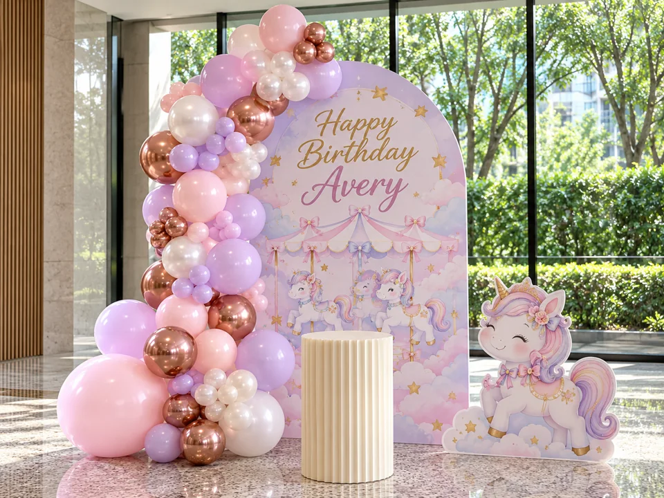
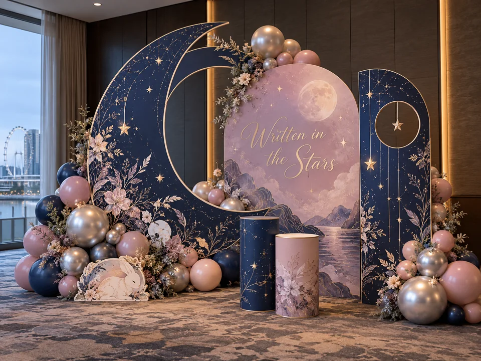
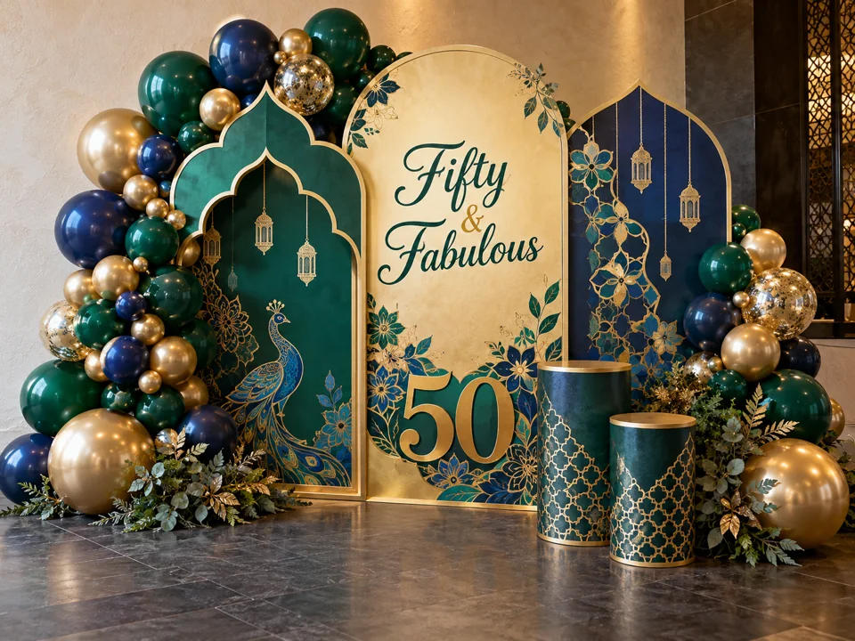
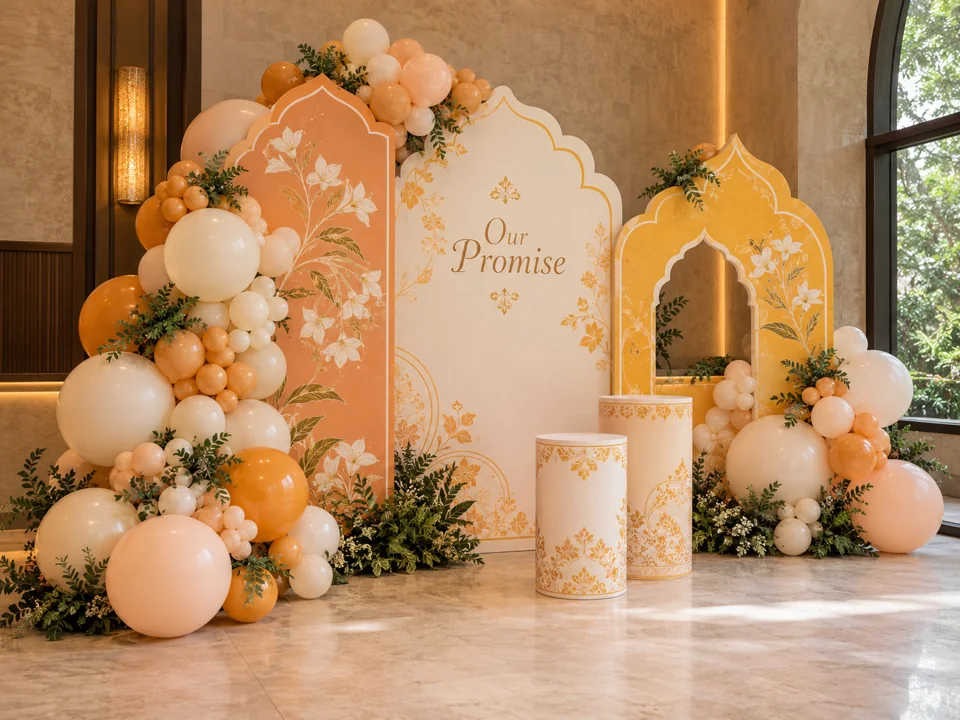
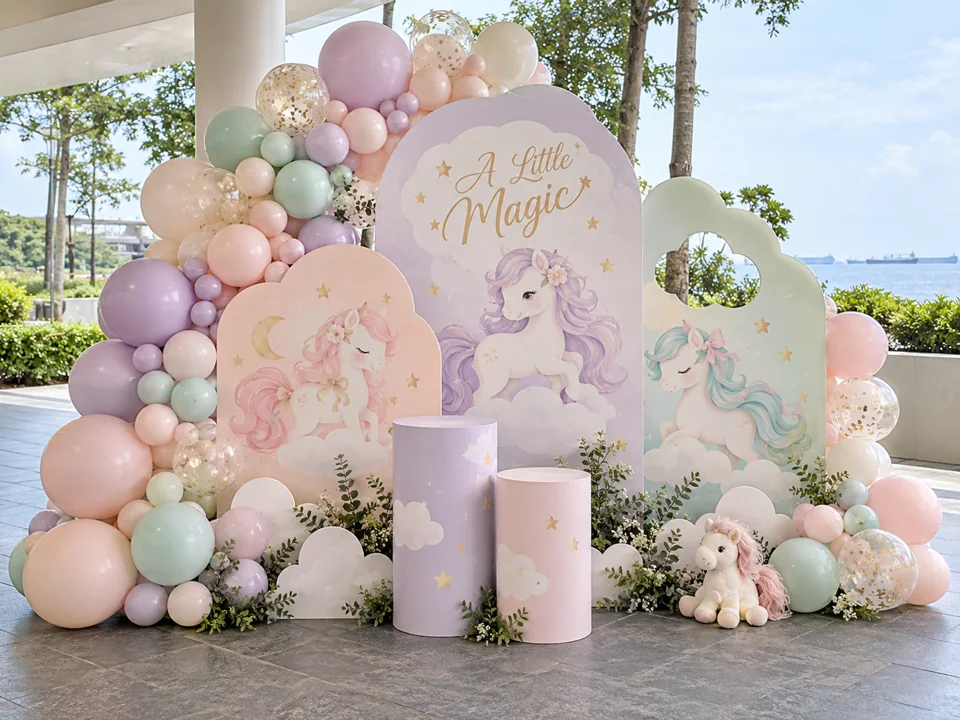

Same space. A different feeling.Illustrative design comparison · Both images are generated concepts
PlainBackdropped
One space. Imagine the possibilities.
01 / OUR STORY
More than another “remember when?”
Life moves quickly. The things we remember are often the smallest: who was beside us, how we laughed, how that moment felt.

A celebration with personality · Illustrative concept01
Lovely parties. Familiar settings.
We’ve celebrated birthdays that were full of love, yet the settings often felt much the same. It made us wonder: what if the backdrop could feel as individual as the person standing in front of it?
Something you could look back on and say, “That was so us.”

For the moments worth keeping · Illustrative concept02
It’s the feeling we want to keep.
In Singapore, life rarely slows down. Between work, family and the next thing on our calendars, a baby’s first celebration, a 21st birthday or an anniversary can arrive in a flash.
The colours, laughter and smiles deserve a setting that brings you right back to that feeling when you see the photos years later.

Personal · Illustrative conceptCorporate · Art Illusion Pte Ltd production contribution
03
That’s why there’s Backdropped.
We create a place for your moment to shine. It might be a playful birthday backdrop, a meaningful wedding welcome or the sign above a business you’ve worked so hard to open.
Through design, print and installation, we help turn an idea into something you can stand beside, share and remember. The people make the memory. We make the backdrop feel like them.
Choose a chapter to turn the page.
02 / WHAT WE BELIEVE
A little more meaning. A lot more you.

Meaningful milestones · Illustrative concept
OUR VISION / THE FUTURE WE WANT
Moments that stay with you.
To make Singapore’s personal and business milestones feel distinctive, meaningful and worth remembering—long after the backdrop comes down.
What does that look like? +
A birthday photo that still makes you smile. A wedding welcome that feels like your story. A shop sign that reminds you how far you’ve come.
Different occasions. The same wish: to make it feel like you.
Craft in progress · Art Illusion Pte Ltd production contribution
OUR MISSION / HOW WE GET THERE
Your story. Made visible.
To turn your ideas into thoughtful backdrops, signage and printed displays, with personal design, considered production and carefully coordinated installation.
What does that mean for you? +
We start with what matters to you: your colours, your space, your occasion and your budget. Then we work through the design and build, with installation and teardown or collection agreed in your quotation.
A clear plan for the physical details, so you can look forward to your moment.
03 / YOUR KIND OF MOMENT
Big feelings. Different occasions.
A cosy celebration in a condo function room. A wedding welcome. A new shopfront. Every space has a story waiting to take shape.

Illustrative personal-event concept
01 / THE PEOPLE YOU LOVE
Small person. Very big feelings.
From a baby’s first milestone to a 21st or an 80th, make room for the colours, little details and personalities that make your family yours.
Your story might be modern, playful or rooted in tradition. From an engagement backdrop to wedding welcome signage, we help make those details feel personal.
For the SME owner opening a first shop, the team launching a product or the brand setting up an exhibition: signage and displays give your hard work a visible presence.
Portfolio photograph featuring Art Illusion Pte Ltd production contributions, including subcontract work.